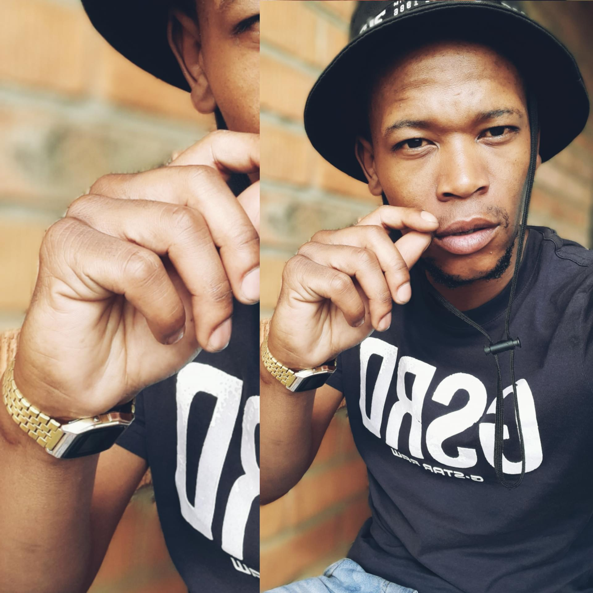

Gift Serathi
Welcome to my digital corner! I'm a Semi-Skilled Authorised Supervisor with an everlasting love for software development and an experience in managing team operations, I've developed my ability to ensure efficiency and maintain high standards. Despite the difficulties of supervision, my heart beats hardest for technological and software advancement. I get energized by delving into the complex world of programming languages, solving software design puzzles, and staying on top of industry developments. I thrive on the thrill of continuous learning and adventure, eager to face the next challenge that comes my way. My ultimate goal? To smoothly combine my experience in supervision with my passion for software development. I am on a journey to transition into a career.
